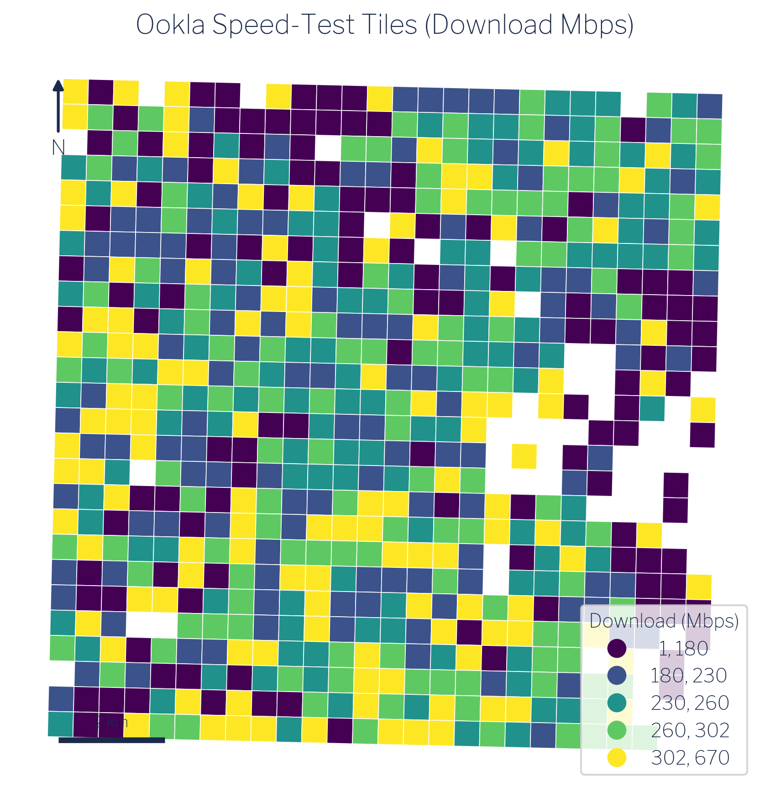
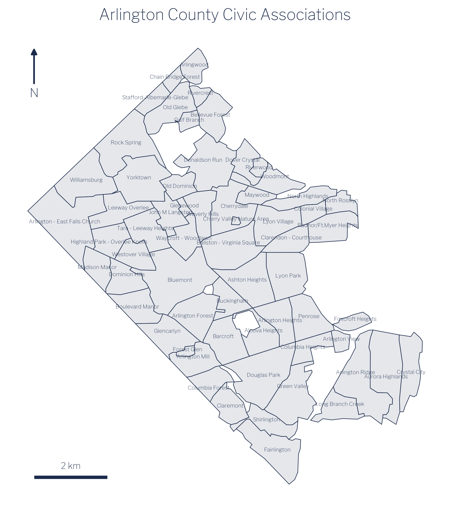

3 The Data
This chapter describes the three datasets used in the worked example: Ookla fixed-broadband speed-test tiles, American Community Survey block-group income and household counts, and Arlington County civic-association boundaries. Each is publicly available.
3.1 Ookla Speed-Test Tiles
Ookla publishes quarterly snapshots of aggregated speed-test performance through its open-data program [1], [2]. The fixed-broadband dataset contains one record per zoom-level-16 web-mercator tile, a global grid in which each cell is approximately 610 meters on a side at mid-latitudes. For each tile that received at least one test in a quarter, the dataset reports the median download speed (Mbps), median upload speed (Mbps), and number of tests that contributed to those medians.
For this guide, the relevant quarter is Q1 2021, chosen to align with the ACS 2021 five-year estimates. Download speed and test count are the primary variables of interest. Test count matters because tiles with very few tests carry more uncertainty; the method chapter discusses how this is handled.
Ookla speed-test data reflects the experience of users who actively ran a test at Speedtest.net or through an embedded Speedtest SDK during the quarter. This is not a random sample of all internet users, and coverage varies with population density and smartphone penetration. These limitations are discussed further in the limitations chapter.

3.2 American Community Survey
The American Community Survey is the Census Bureau’s ongoing household survey, published annually as one-year and five-year estimates. The five-year estimates average data collected over a rolling 60-month window and are the appropriate choice for small geographies where single-year samples are too thin to support reliable estimates [3], [4].
This guide uses two block-group-level variables from the ACS 2021 five-year release:
- Table B19025: Aggregate household income. This is the sum of all household incomes within the block group, expressed in dollars. Unlike the median, aggregate income is an additive quantity: totals from sub-areas can be summed to produce a total for any containing area.
- Table B11001: Household count. The number of occupied housing units in the block group.
We use these two counts together rather than median income because mean income for any custom geography can be derived directly from them: divide aggregate income by household count. This arithmetic is only valid for additive counts, not medians. Using aggregate income and household counts preserves the ability to produce correct estimates at any aggregated geographic unit.
3.3 Arlington Civic Associations
Arlington County, Virginia is divided into 62 civic associations: community-defined neighborhoods that are the county’s primary formal mechanism for organized resident input [5], [6]. Each association elects officers and engages with county government on land use, transportation, infrastructure, and community services. Membership in the Arlington County Civic Federation, which coordinates the associations, is the standard means by which neighborhoods participate in county decision-making.
The civic-association boundaries used here come from Arlington County’s GIS open data portal [7]. The 62 associations cover the entire county and tile it without overlap, making them a complete and non-overlapping partition of Arlington’s approximately 109,528 households. This makes them an ideal policy geography: they are locally meaningful, formally recognized, and together exhaustive.

Because civic associations are not part of the Census geographic hierarchy, no federal statistical agency publishes estimates at this level. Producing those estimates is precisely what the remainder of this guide demonstrates.